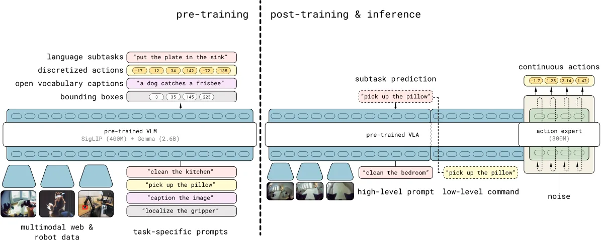
π0.5: a Vision-Language-Action Model with Open-World Generalization
π0.5：具备开放世界泛化能力的视觉-语言-动作模型
在 π0 之上用异构数据 co-training（97.6% 样本非来自移动操作机器人），让双臂移动机器人在完全没见过的真实家庭里端到端完成 10–15 分钟的扫厨房/收卧室长程任务。
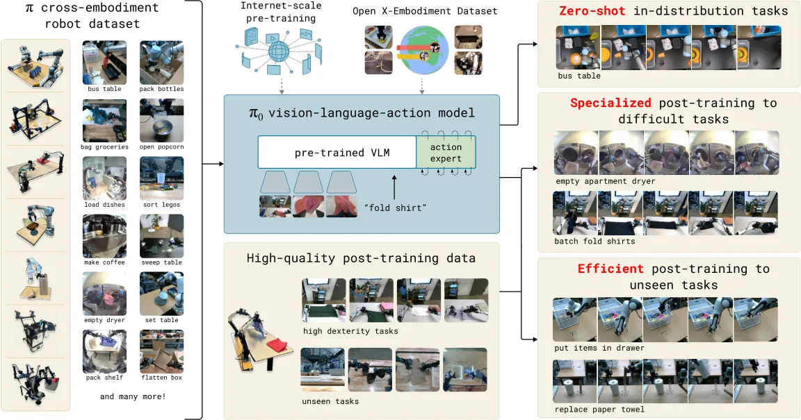
π0: A Vision-Language-Action Flow Model for General Robot Control
π0：面向通用机器人控制的视觉-语言-动作流模型
把 VLM 预训练的语义知识与 flow matching 的连续动作建模焊进同一 transformer，用「动作专家」独立权重块实现灵巧操作 VLA 的基础范式。
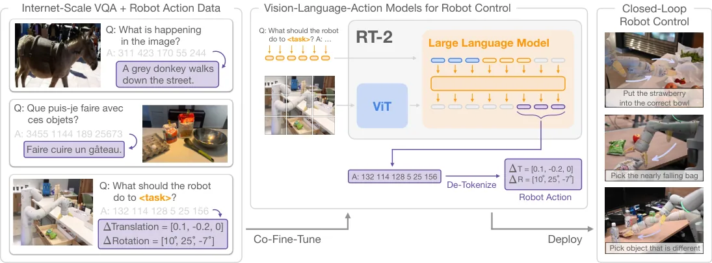
RT-2: Vision-Language-Action Models Transfer Web Knowledge to Robotic Control
RT-2：视觉-语言-动作模型将网页知识迁移到机器人控制
把动作表示为文本 token，co-fine-tune VLM 与机器人数据，网页语义知识直接迁移到机器人控制的涌现能力与泛化
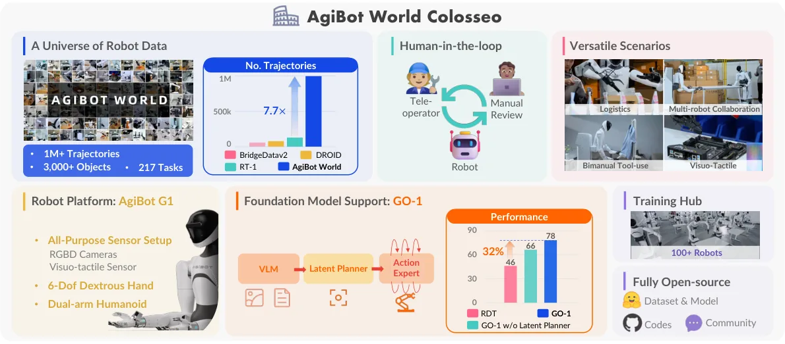
AgiBot World Colosseo: A Large-scale Manipulation Platform for Scalable and Intelligent Embodied Systems
AgiBot World Colosseo：可扩展智能具身系统大规模操作平台（含 GO-1 通用策略）
百台同构双臂机器人采集 1M+ 轨迹，配套 ViLLA 框架（Latent Action + VLM Latent Planner + Action Expert）使人类视频和跨本体数据都能用于预训练，GO-1 超越 RDT-1B 32%。

CoCo-InEKF: State Estimation with Learned Contact Covariances in Dynamic, Contact-Rich Scenarios
动态接触场景下的学习接触协方差状态估计
可微 Invariant EKF：用 240K 参数 MLP 端到端预测每个接触候选点的连续速度协方差，取代传统二值接触状态。
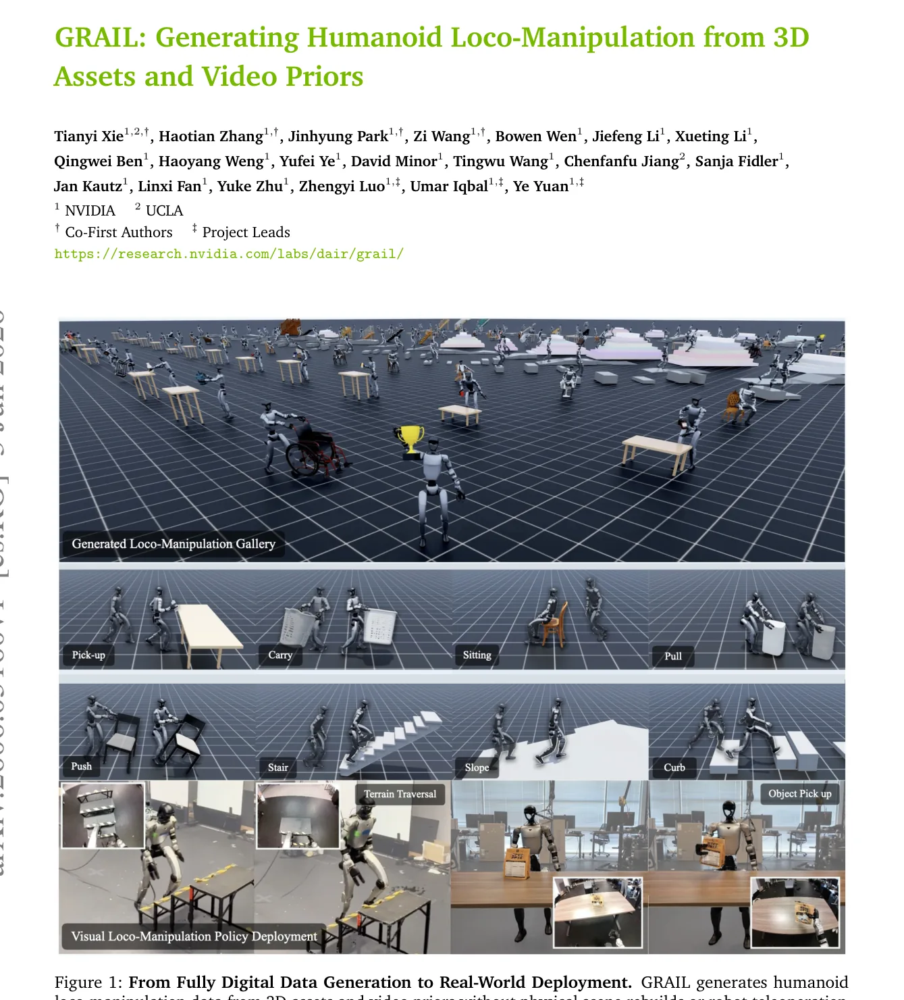
GRAIL: Generating Humanoid Loco-Manipulation from 3D Assets and Video Priors
GRAIL：从 3D 资产与视频先验生成人形 Loco-Manipulation 数据
倒置范式：不重建无约束视频，而是先指定 3D 场景 + 机器人比例化身，再用 VFM 在已知度量框架内生成参考交互；产出 20K+ 序列，零真机数据训练即可在 Unitree G1 上抓取 84% / 爬楼 90%。
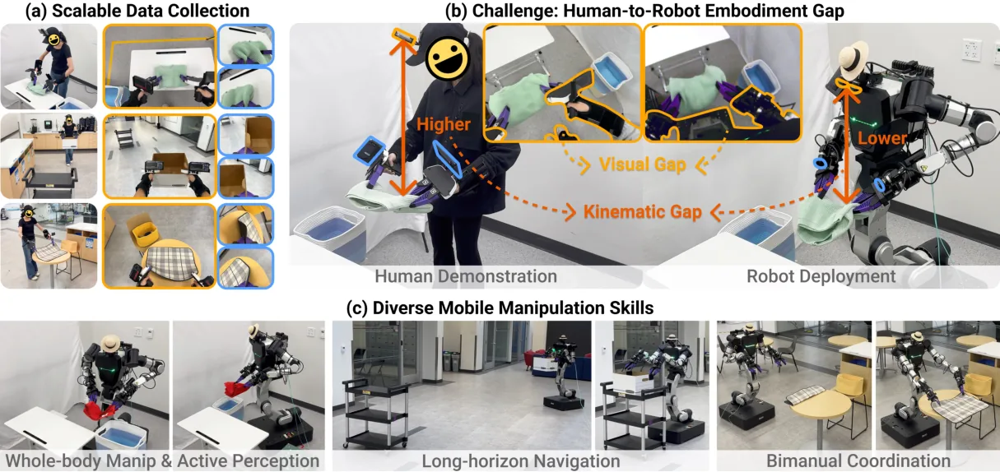
HoMMI: Learning Whole-Body Mobile Manipulation from Human Demonstrations
HoMMI：从人类示范中学习全身移动操作
给 UMI 手持夹爪加头戴 iPhone，用三个跨本体设计（3D 点云视觉、look-at 点头部动作、夹爪坐标系）将纯人类示范直接迁移到全身移动机器人，无需任何机器人遥操数据。
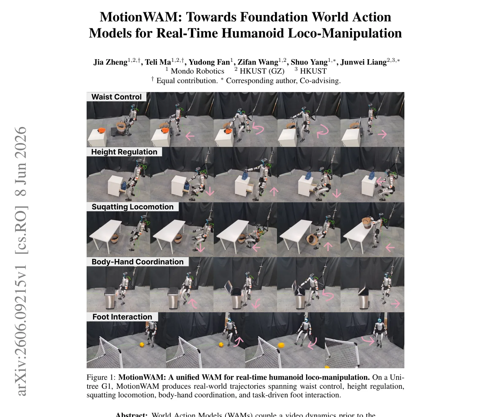
MotionWAM: Towards Foundation World Action Models for Real-Time Humanoid Loco-Manipulation
MotionWAM：面向实时人形 Loco-Manipulation 的基础世界动作模型
读取视频世界模型(Video DiT)的「中间去噪特征」单次前向当条件，驱动统一全身 motion token，做成首个实时全身人形 WAM，反超 SOTA VLA 30+ 点。
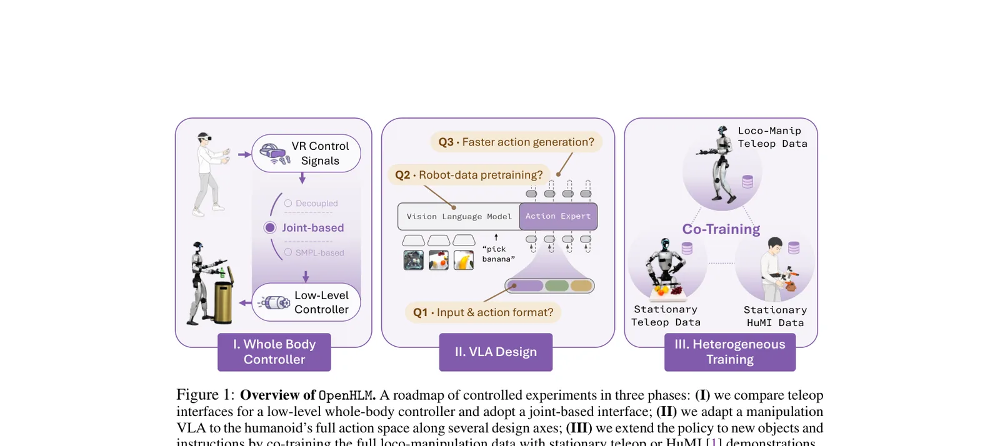
OpenHLM: An Empirical Recipe for Whole-Body Humanoid Loco-Manipulation
OpenHLM：全身人形 Loco-Manipulation 的实证菜谱
用一条受控实验路线图（遥操→VLA适配→异构co-training）逐变量敲定「全身原生」人形 VLA 配方，反超 GR00T N1.6 与 Ψ0。
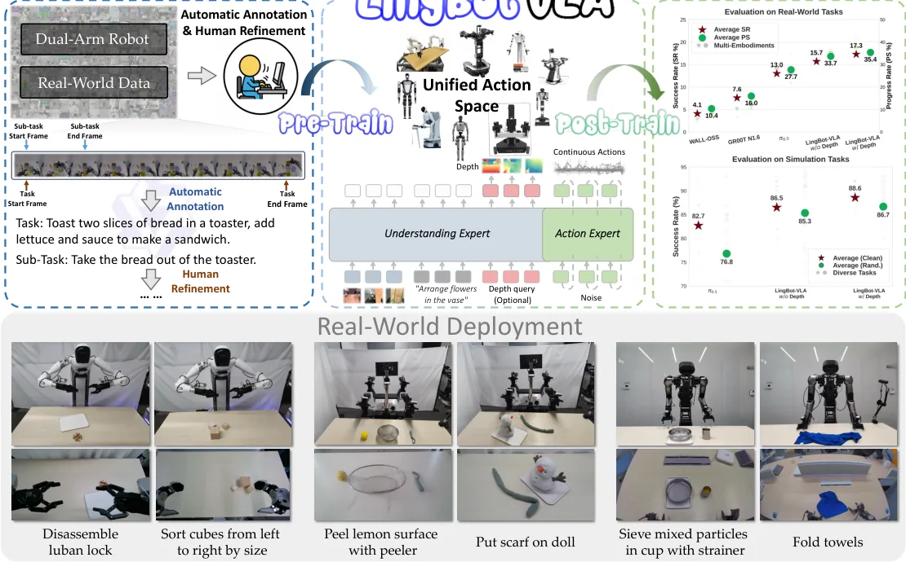
A Pragmatic VLA Foundation Model
LingBot-VLA：实用型 VLA 基础模型
用 20,000 小时真实双臂操作数据 + FSDP2 高效训练框架，首次系统实证 VLA scaling law（数据量越大成功率持续上升），并在 GM-100 基准超越 π0.5/GR00T N1.6，全开源（代码/权重/数据）。
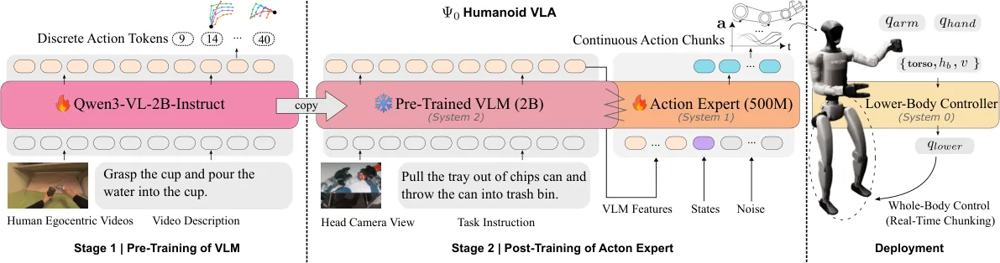
Psi0: An Open Foundation Model Towards Universal Humanoid Loco-Manipulation
Ψ0：面向通用人形移动操作的开放基础模型
解耦 VLM egocentric 预训练与 flow action expert，用 10 倍更少数据超越所有人形 loco-manip 基线 40% 以上
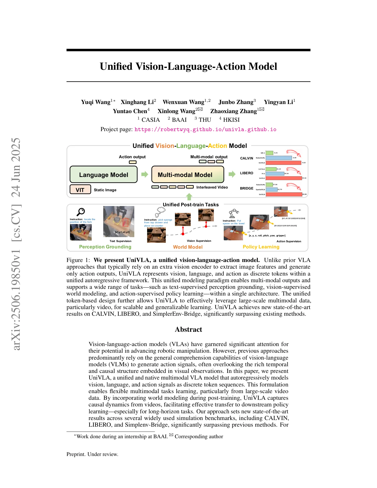
Unified Vision-Language-Action Model
统一视觉-语言-动作模型 (UniVLA)
把视觉、语言、动作全部离散化为同一词表 token，用单一自回归 Transformer 统一建模，并插入无动作标注的世界模型后训练阶段，显著提升长程任务性能与数据效率。
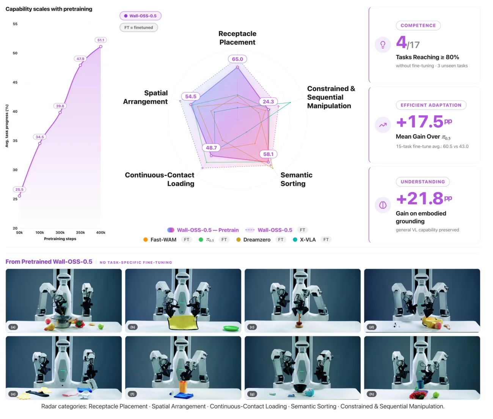
Wall-OSS-0.5 Technical Report
Wall-OSS-0.5 · Pretrain Once, Act Anywhere
基于 Qwen2.5-VL-3B 的 4B 开源 VLA，用 gradient-bridged co-training 单阶段联合训练，预训练 checkpoint 无需微调即可直接当真机策略。
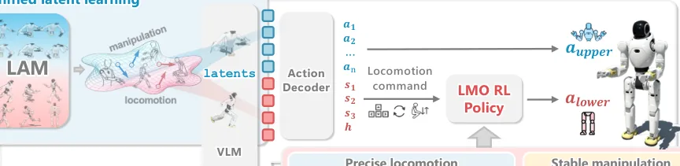
WholeBodyVLA: Towards Unified Latent VLA for Whole-Body Loco-Manipulation Control
WholeBodyVLA：面向全身 Loco-Manipulation 控制的统一潜动作 VLA
用人类 egocentric 自拍视频训练双 LAM（潜动作模型），在统一潜动作空间中同时学习操作与移动，端到端驱动人形机器人实现 large-space loco-manipulation
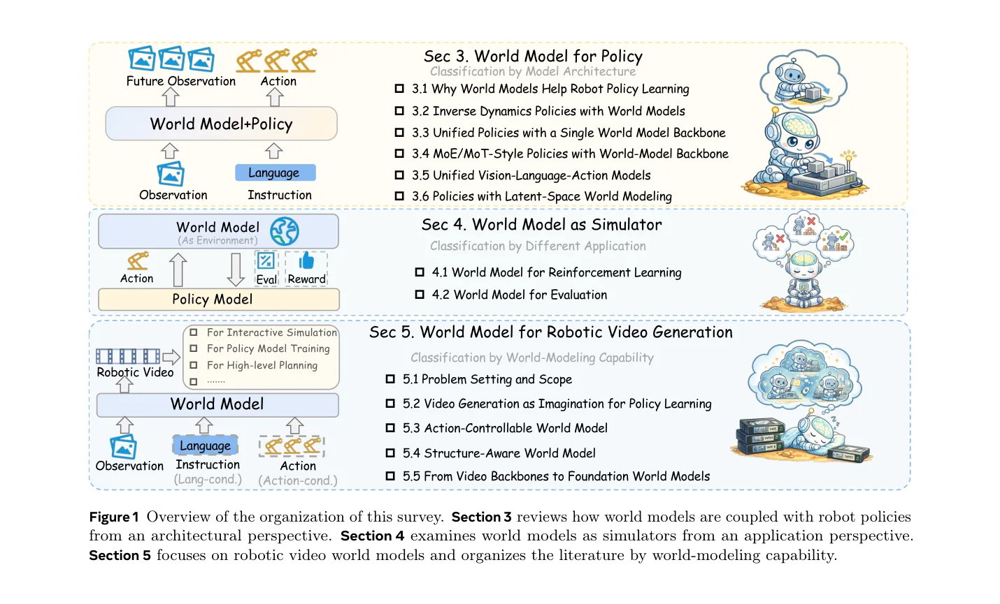
World Model for Robot Learning: A Comprehensive Survey
面向机器人学习的世界模型：综述
policy-centric 的机器人世界模型综述：用统一的预测-控制联合分布把 policy/IDM/passive·controllable WM 收编为同一分布的不同查询，并按『为策略 / 当模拟器 / 视频世界模型』三主线组织全领域（覆盖到 2026.3，含大量工业/最新工作）。

X-VLA: Soft-Prompted Transformer as Scalable Cross-Embodiment Vision-Language-Action Model
X-VLA：软提示 Transformer 作为可扩展跨本体视觉-语言-动作模型
给每个机器人数据源分配一组可学习 soft prompt 嵌入（仅 0.04% 参数），注入 Transformer 编码早期，让 0.9B 模型以最少新增参数实现跨 7 种硬件平台的稳定预训练与 PEFT 高效适配，在 5/6 仿真 benchmark 创 SOTA。
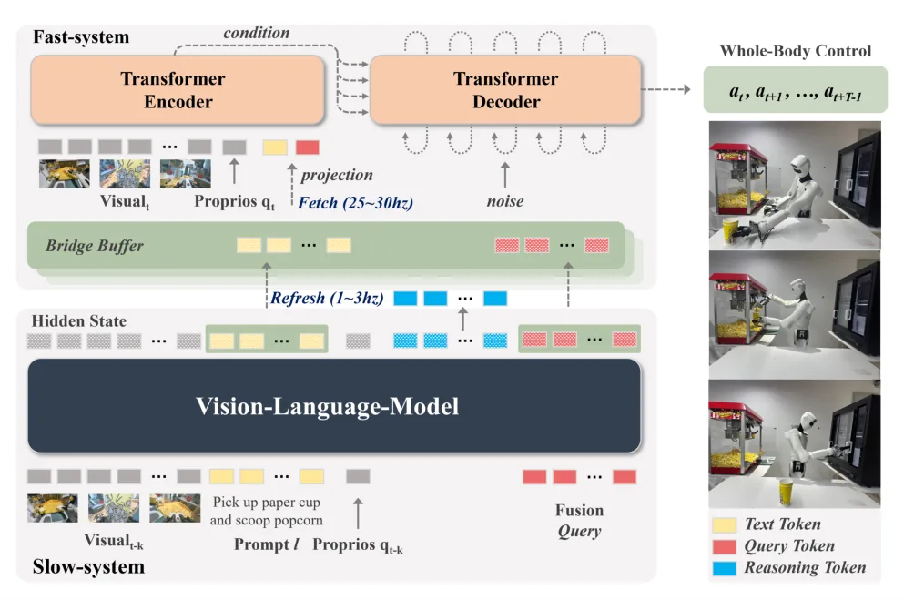
Asynchronous Fast-Slow Vision-Language-Action Policies for Whole-Body Robotic Manipulation
用于全身机器人操作的异步快慢视觉-语言-动作策略 (DuoCore-FS / Astribot S1)
真并行异步快慢双系统 VLA（DuoCore-FS）：大 VLM 以 1–3 Hz 异步刷新语义 bridge buffer，轻量 diffusion policy 以 30 Hz 独立出全身动作，约 3× 提速同时维持精度。
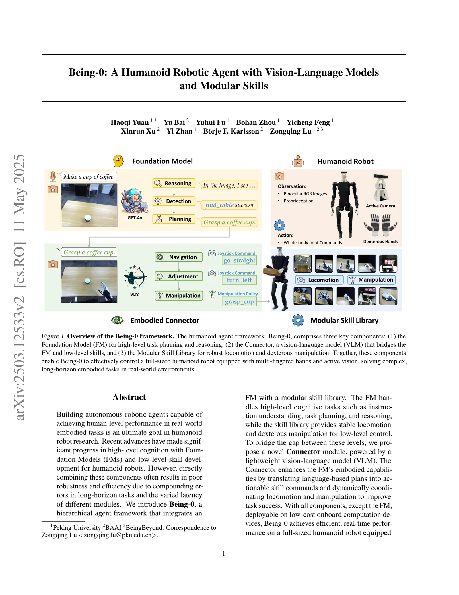
Being-0: A Humanoid Robotic Agent with Vision-Language Models and Modular Skills
Being-0：基于视觉语言模型与模块化技能的人形机器人 Agent
在 FM（GPT-4o）与模块化技能库之间插入一个轻量 Connector VLM，专门解决双足不稳/FM 感知慢/导航停位不对三重挑战，使人形机器人长程任务完成率达 84.4%、导航效率提升 4.2×。
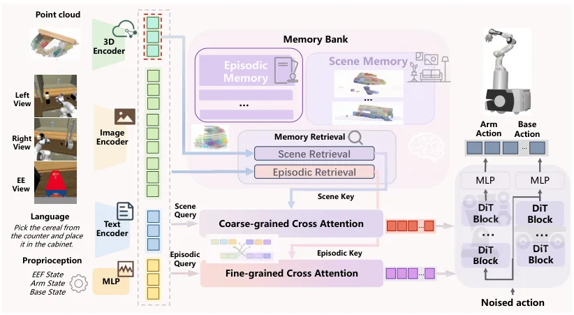
EchoVLA: Synergistic Declarative Memory for VLA-Driven Mobile Manipulation
EchoVLA：用于 VLA 驱动移动操作的协同陈述性记忆
仿人脑双记忆（voxel 场景地图 + 情节 token buffer）驱动 per-part diffusion，解决移动操作 VLA 的非马尔可夫难题
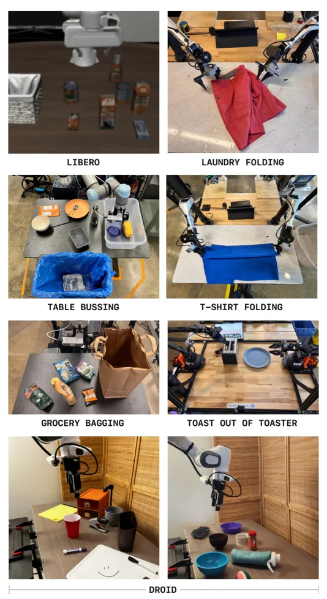
FAST: Efficient Action Tokenization for Vision-Language-Action Models
FAST：面向 VLA 模型的高效动作 Tokenization
用 DCT 变频域 + BPE 去冗余，把高频机器人 action chunk 压缩为少量高信息密度 token，解决自回归 VLA 无法处理高频灵巧任务的根本问题，训练速度提升 5×、性能追平扩散 VLA。
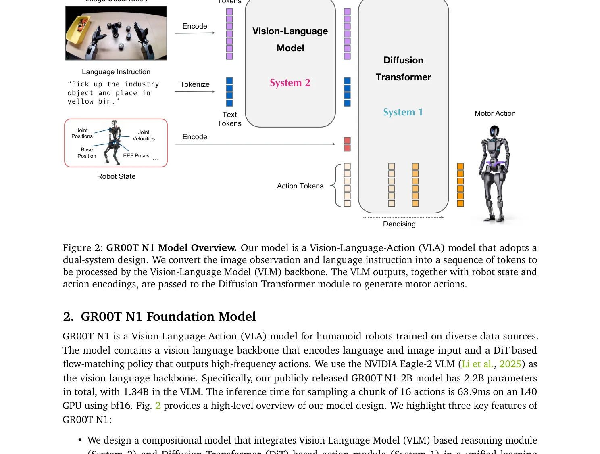
GR00T N1: An Open Foundation Model for Generalist Humanoid Robots
GR00T N1：面向通用人形机器人的开放基础模型
NVIDIA 提出双系统 VLA（VLM推理 + DiT执行），用数据金字塔策略整合网络视频/仿真/神经轨迹/真机数据，实现跨 embodiment 的通用人形机器人操作，2.2B 模型完全开源。
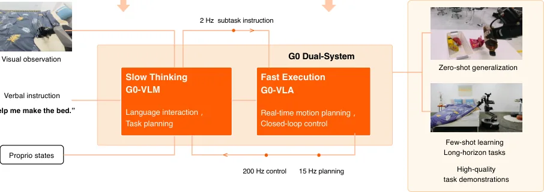
Galaxea Open-World Dataset and G0 Dual-System VLA Model
Galaxea 开放世界数据集与 G0 双系统 VLA 模型
用 500h 真实开放世界单一本体数据驱动双系统 VLA（VLM 慢规划 + VLA 快执行），证明单一本体 Stage-2 预训练比跨本体预训练更关键。
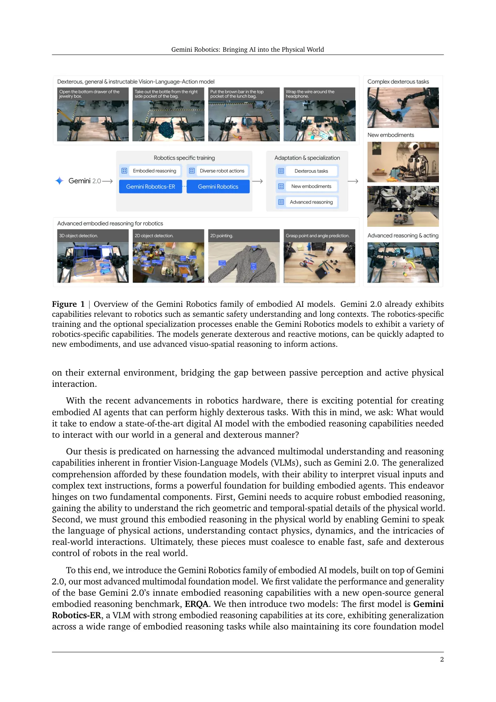
Gemini Robotics: Bringing AI into the Physical World
Gemini Robotics：将 AI 带入物理世界
把 Gemini 2.0 的 frontier 世界知识与具身推理能力（Gemini Robotics-ER）接到 VLA 动作模型上，实现强泛化 + 灵巧操作 + 快速适配新任务/新本体
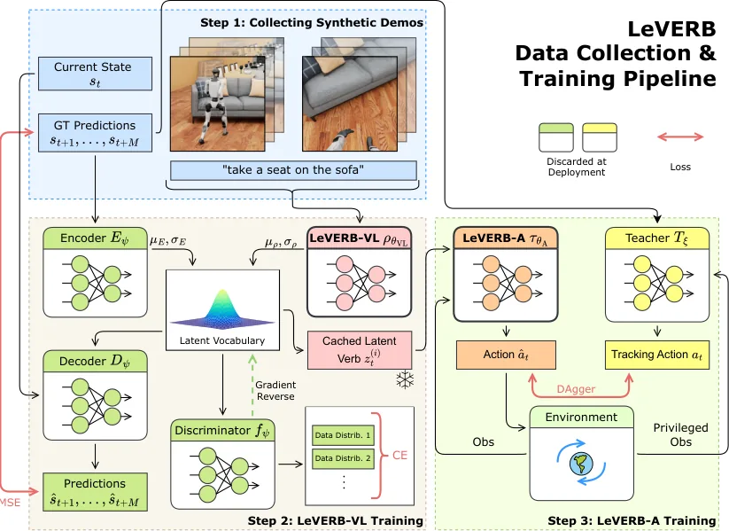
LeVERB: Humanoid Whole-Body Control with Latent Vision-Language Instruction
LeVERB：用潜在视觉语言指令实现人形全身控制
首个用学习的 latent verb 接口连接 VLA 与 RL 全身控制器的人形机器人框架，同时覆盖 Track A（VLA）和 Track B（sim-to-real WBC）
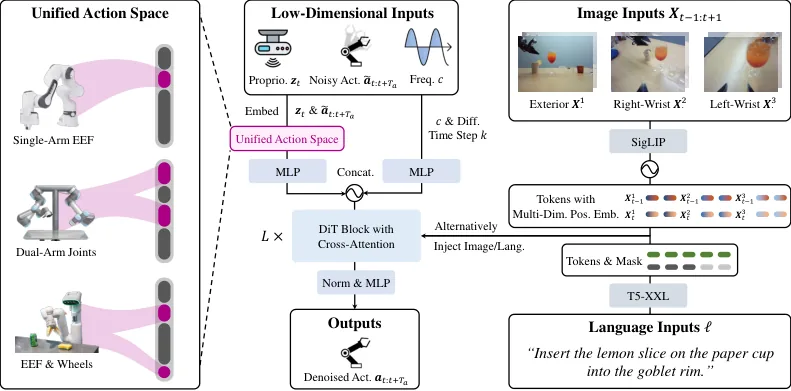
RDT-1B: a Diffusion Foundation Model for Bimanual Manipulation
RDT-1B：双臂操作扩散基础模型
用扩散 Transformer + 物理可解释统一动作空间，在 1M+ 多机器人数据上预训练出最大扩散型双臂操作 VLA（1.2B），实现零样本/少样本泛化到未见物体、场景和技能。

SpatialVLA: Exploring Spatial Representations for Visual-Language-Action Model
SpatialVLA：探索视觉-语言-动作模型的空间表示
在 VLA 的观测端注入 Ego3D 位置编码、动作端用自适应 Gaussian 格子离散化，让机器人策略在 1.1M episodes 预训练中同时学会3D空间感知和跨本体迁移。
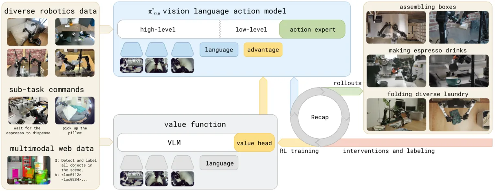
π*0.6: a VLA That Learns From Experience
π*₀.₆：从经验中学习的视觉-语言-动作模型
用 RECAP（advantage conditioning + 迭代 offline RL）让大型 flow matching VLA 在真实部署中不断超越模仿学习上界——洗衣/咖啡/箱子组装吞吐量翻倍、失败率减半。
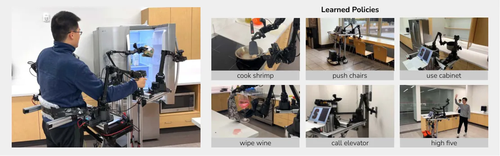
Mobile ALOHA: Learning Bimanual Mobile Manipulation with Low-Cost Whole-Body Teleoperation
Mobile ALOHA：低成本全身遥操的双臂移动操作学习
造一套 $32k 腰带式全身遥操硬件，再用静态双臂数据 co-training 补运动先验，50 次演示可学会电梯/柜子/厨房等复杂全身协调任务。
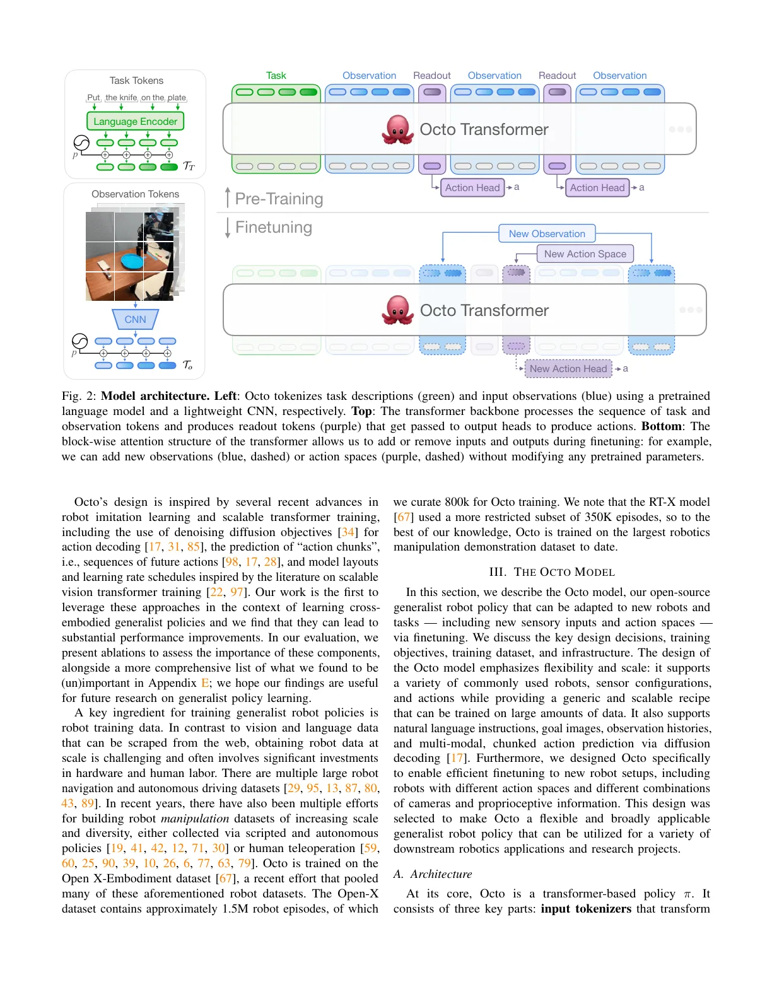
Octo: An Open-Source Generalist Robot Policy
Octo：开源通用机器人策略
用 800k OXE 轨迹预训练 transformer + readout token + diffusion action head，首个既能灵活微调到新观测/动作空间、又完全开源的通用机器人操作策略。
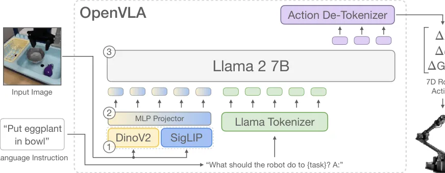
OpenVLA: An Open-Source Vision-Language-Action Model
OpenVLA：开源视觉-语言-动作模型
把 Prismatic-7B VLM 直接在 970k OXE 机器人示范上 fine-tune，配合 LoRA 和 int4 量化，建立首个真正开源可消费级 GPU 部署的通用 VLA 基准
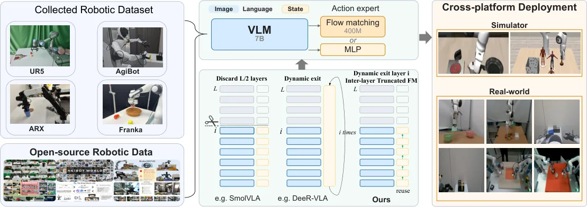
A1: A Fully Transparent Open-Source, Adaptive and Efficient Truncated Vision-Language-Action Model
A1：全透明开源、自适应高效的截断视觉-语言-动作模型
同时截断 VLM 骨干（action 一致性早退出）与 flow matching 头（层间热启动 δ=2 步去噪），以 76.6% 骨干算力削减 + 72% 延迟降低实现高效 VLA 推理，并全栈开源。

AnoleVLA: Lightweight Vision-Language-Action Model with Deep State Space Models for Mobile Manipulation
AnoleVLA：基于深度状态空间模型的轻量视觉-语言-动作模型用于移动操作
用 Mamba (deep SSM) 替换 Transformer backbone，O(L²)→O(L) 复杂度，在真实移动操作机器人上比 π0.5 成功率高 21 分、推理快 3 倍

Encoder Winners Do Not Reliably Transfer Across VLA Backbone Scale: A Frozen-Backbone Grafting Diagnostic
VLA 的 encoder 赢家不能可靠跨 backbone 规模迁移：一个 frozen-backbone grafting 诊断
诊断/分析论文（非新模型）：提出 frozen-backbone grafting 诊断——换掉已发布 VLA 的 vision tower、冻结 LM 与 action expert、只训一个线性 projector，用 offline action MSE 评分；跨 4 encoder × 2 LIBERO suite × 2 backbone（SmolVLA-450M / π0.5-3.3B）证明小 backbone 的 encoder 赢家不能可靠预测大 backbone 的最优，且 grafting wrapper 本身非中性、两 backbone 符号相反。
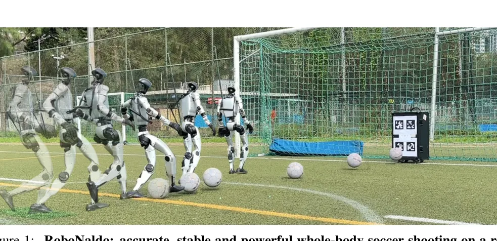
RoboNaldo: Accurate, Stable and Powerful Humanoid Soccer Shooting via Motion-Guided Curriculum Reinforcement Learning
RoboNaldo：用动作引导课程强化学习实现精准、稳定、大力的人形足球射门
用三阶段 motion-guided curriculum RL，把固定参考的稳定性（motion tracking）与 task 奖励的精准性焊到一起，让 Unitree G1 在真草地全 onboard 打出精准、稳定、高冲量的全身足球射门（free-kick 0.73m 误差、球速 13.10 m/s 达职业 59–71%）。
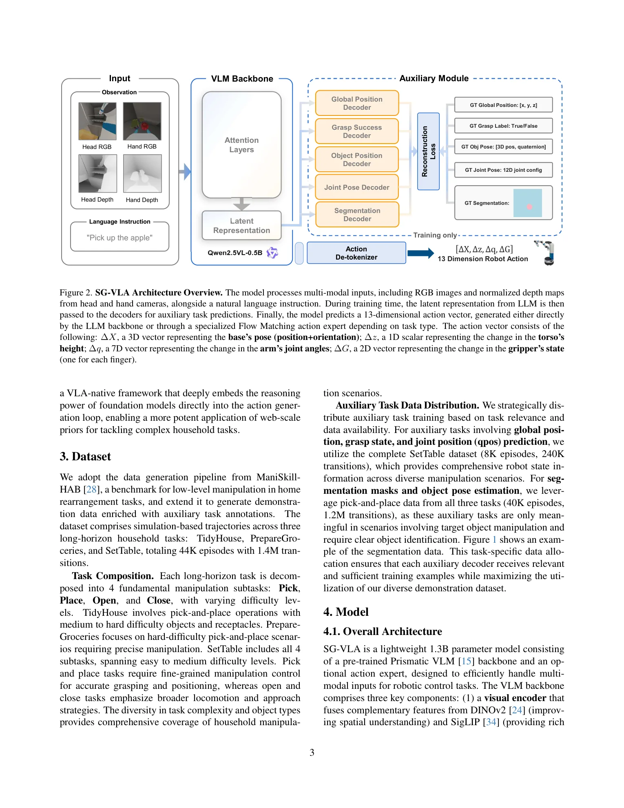
SG-VLA: Learning Spatially-Grounded Vision-Language-Action Models for Mobile Manipulation
SG-VLA：学习用于移动操作的空间感知视觉-语言-动作模型
在 VLA backbone 上挂 5 路辅助解码器（分割/位姿/关节/抓取/全局位置）提供密集空间监督，配合多视角 RGB+depth 输入，将 mobile manipulation 成功率从 60% 提升至 73%。
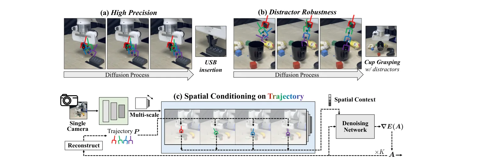
Spatially Conditioned Diffusion Policy: Learning Precise and Robust Manipulation with a Single RGB Camera
空间条件扩散策略：用单个 RGB 相机学习精密且鲁棒的操作
非 VLA 模型——单任务 imitation/diffusion policy（无语言）：把扩散去噪过程中的中间末端轨迹投影回图像当视觉注意力锚点，沿轨迹采样多尺度特征反馈去噪网络，让单个全局 RGB 相机也能做 USB 插入级精密接触操作，并追平甚至超过加腕相机的多相机基线。

Stubborn: A Streamlined and Unified Reinforcement Learning Framework for Robust Motion Tracking and Fall Recovery for Humanoids
Stubborn：统一动作跟踪与摔倒恢复的精简 RL 框架
把人形的动作跟踪与摔倒恢复统一进单一 RL 策略（单阶段、无专门恢复奖励/恢复策略）：核心是把跟踪失败当成进入跌倒态流形的入口，用 Bernoulli 概率(软)终止替换硬终止给恢复留探索窗，再用误差驱动采样啃难片段；5 m/s 强扰动恢复成功率 100%（消融掉 PT 仅 77.5/85%），真机 Unitree G1 跑通空翻/特技/摔倒恢复。
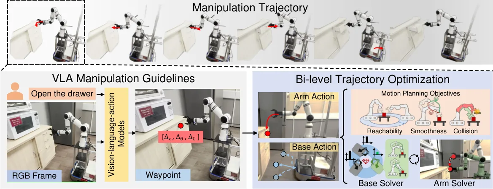
MoManipVLA: Transferring Vision-language-action Models for General Mobile Manipulation
MoManipVLA：将 VLA 模型迁移至通用移动操作
把固定基座 VLA 当路径点生成器，通过物理可行性约束下的双层轨迹优化（上层优化底盘、下层优化臂轨迹），以极低训练成本将其迁移到移动操作平台。
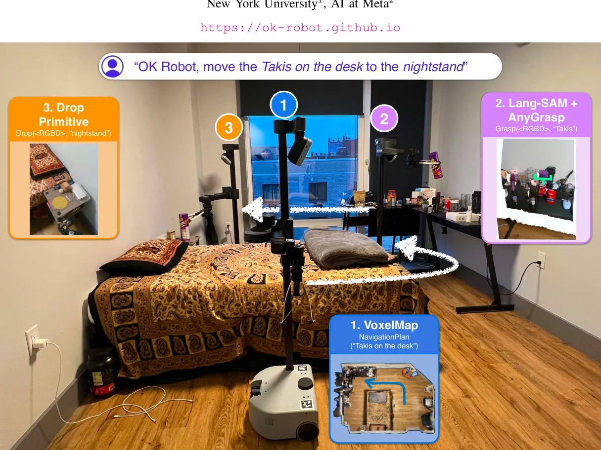
OK-Robot: What Really Matters in Integrating Open-Knowledge Models for Robotics
OK-Robot：开放知识模型集成机器人——关键在哪里
把 CLIP、OWL-ViT、AnyGrasp、Lang-SAM 等开放知识模型拼成无训练家庭移动抓取系统，OVMM 成功率 58.5%，是竞赛冠军的 1.8×——关键不是用哪个模型，而是怎么把它们组合好。
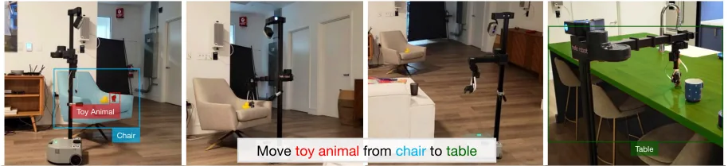
HomeRobot: Open-Vocabulary Mobile Manipulation
HomeRobot：开放词汇移动操作
首个可复现的开放词汇移动操作基准：形式化 OVMM 任务定义，提供 Habitat 仿真 + Hello Robot Stretch 真实机器人的共享软件栈，让不同实验室能在同一基准上公平比较。
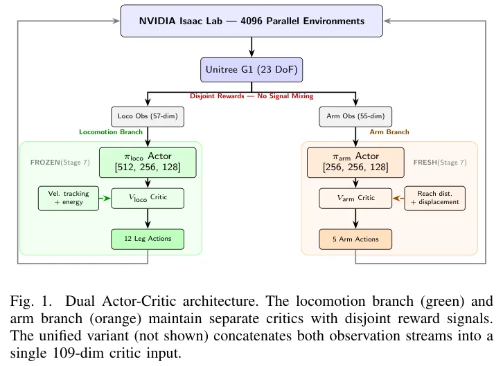
Critic Architecture Matters: Dual vs. Unified Critics for Humanoid Loco-Manipulation
Critic 架构很关键：人形 loco-manipulation 中双 critic 对单 critic
控制变量对照：人形 loco-manip 单策略里把目标分给两个独立 critic，比用一个统一 critic 到达快 3.5×、吞吐 2×，且这件事比堆 reward 工程更管用。
没有匹配的论文，试试放宽筛选条件。